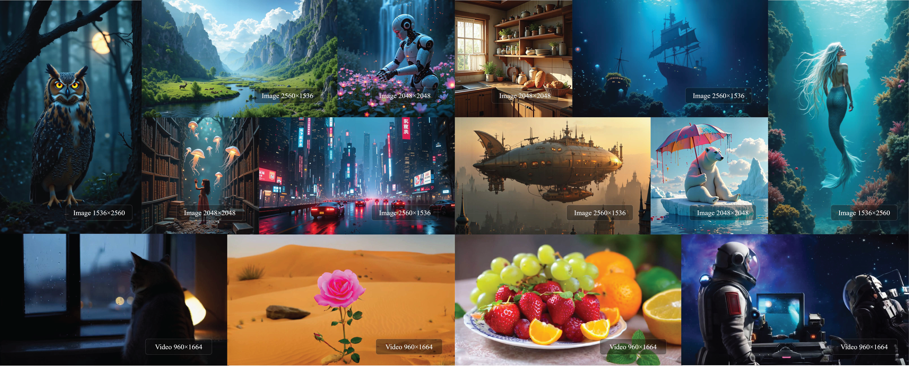
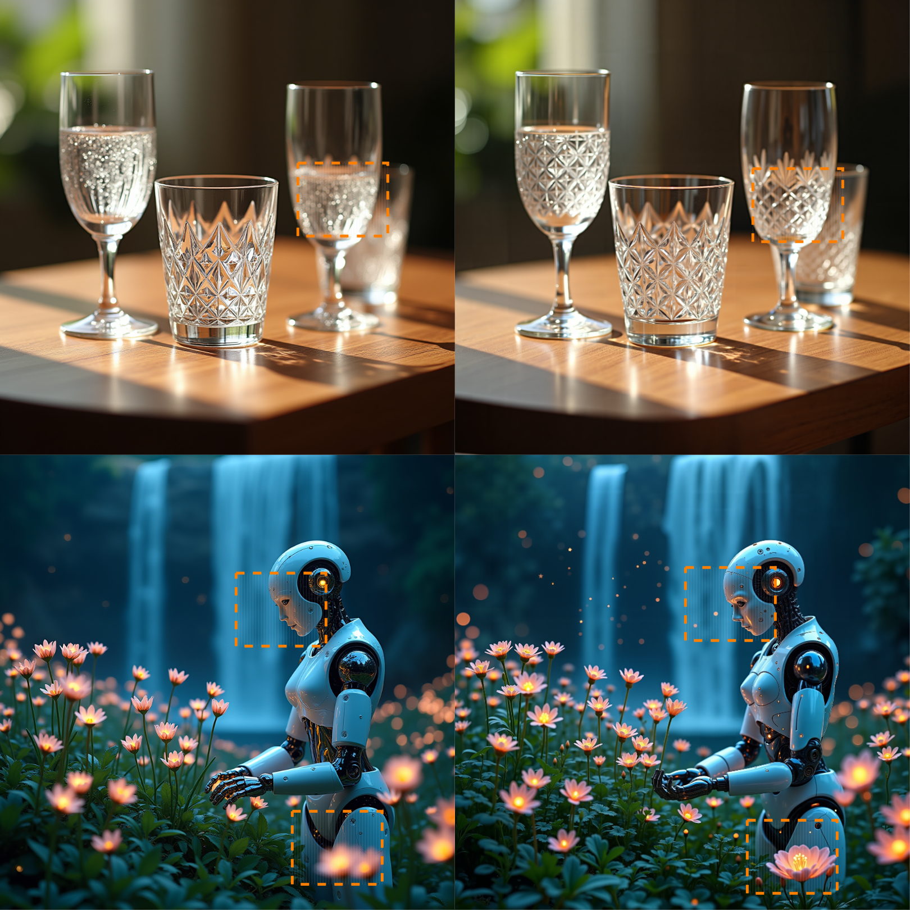
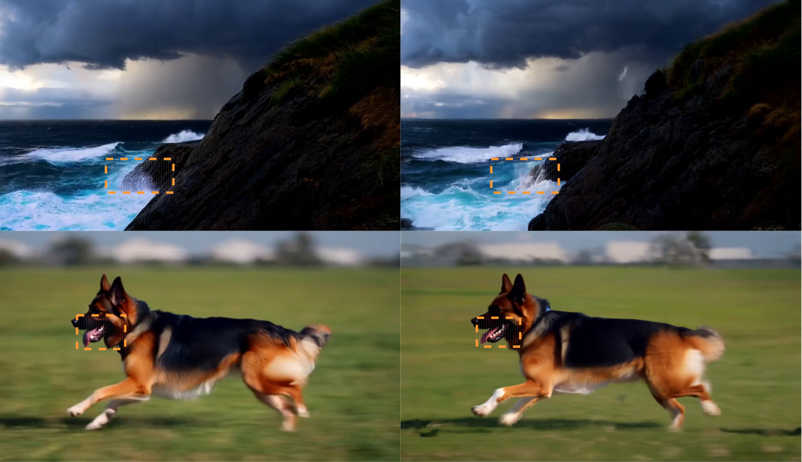

Shifted Local Windows
Regular non-overlapping windows use interleaved spatial shifts so information can cross partition boundaries over layers and denoising steps.
BASA combines regular local sparse attention with cross-window and global information propagation, targeting practical acceleration on standard attention backends for high-resolution image and video generation.

Diffusion Transformers become increasingly expensive as visual token sequences grow. BASA is designed to keep sparse attention regular enough for efficient execution while restoring the communication that conventional non-overlapping windows tend to lose.
BASA combines shifted local-window sparse attention, K/V-pooled global memory, and content-adaptive true-window routing for video. The sparse student is adapted from the original dense DiT using a frozen dense teacher, while inference keeps only the sparse model.
The key implementation goal is backend agnosticism: the sparse computation is expressed with regular attention operations instead of relying on a bespoke sparse kernel, helping theoretical sparsity turn into measured wall-clock acceleration.
Overview of BASA. (a) The proposed sparse attention framework integrates multiple components to recover both local and global visual interactions under reduced attention cost. (b) BASA is applied as a drop-in replacement for the visual self-attention module in DiT blocks, while the remaining generation pipeline remains unchanged.

Regular non-overlapping windows use interleaved spatial shifts so information can cross partition boundaries over layers and denoising steps.
Spatially pooled keys and values provide compressed global context to each query window at low additional cost.
For video, content-adaptive routing retrieves a few relevant uncompressed windows while preserving their temporal extent.
A frozen dense teacher supervises sparse adaptation; the teacher is removed for inference.
Representative attention-efficiency numbers reported for FLUX.1-dev and Wan2.1-T2V-1.3B.
| Setting | Backbone | BASA configuration | Attention latency | Speedup |
|---|---|---|---|---|
| 1024×1024 → 2048×2048 | FLUX.1-dev | w=32, p=4 | 8.871 ms | 2.443× |
| 832×480 → 1664×960 | Wan2.1-T2V-1.3B | w=(10,10), p=(4,4) | 112.84 ms | 4.52× |
Representative high-resolution video generation results with BASA.
Qualitative comparisons for image and video resolution extrapolation.


Update the entry with the arXiv identifier once the public preprint is available.
@article{ma2026basa,
title = {Backend-Agnostic Sparse Attention for Fast High-Resolution Visual Generation},
author = {Ma, Liao and Song, Jiayi and Wu, Yunfeng and Liu, Songhua and Zhao, Peilin},
year = {2026}
}